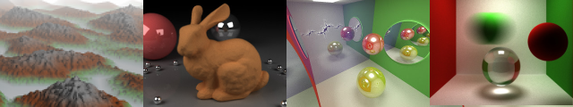

CIS 565: GPU Programming and Architecture
Fall 2013
University of Pennsylvania
Computer Graphics @ Penn


Course Overview • FAQ • Schedule • Previous semester
CIS 565: GPU Programming and ArchitectureFall 2013
University of Pennsylvania |
|
|
Course Overview • FAQ • Schedule • Previous semester |
DescriptionA timely selection from the following topics: GPU hardware, CUDA, massively parallel algorithms, graphics pipeline, real-time rendering, 3D engine architecture, asset formats, OpenGL, OpenGL ES, WebGL, and mobile GPUs. This is a project-intensive course with significant coding, writing, and presenting. It is more work than any other course, but it is worth it. Prerequisites
Organizer
Patrick Cozzi, pjcozzi+cis565@gmail.com Teaching Assistant
Harmony Li, harmoli (at) seas.upenn.com Meeting
Monday, 6 - 9 pm, Moore 212 Online
Recommonded BooksNo books are required, but course material comes from many sources including:
Grading
Academic IntegrityAn academic integrity violation will result in the student receiving an F in this course. See Academic Integrity at the University of Pennsylvania: A Guide for Students. Lab Resources
AcknowledgementsJoe Kider, Gary Katz, and Suresh Venkatasubramanian taught this course before me. All my former TAs have helped shape this course: Liam Boone, Karl Li, Varun Sampath, and Jon McCaffrey. Previous students have provided significant course feedback including: Xing Du, Karl Li, and Ian Lilley. Many passionate folks in our field have also provided course input: Johan Andersson, (@repi),Quarup Barreirinhas, (@quarup), Wolfgang Engel, (@wolfgangengel), Mikkel Gjoel, (@pixelmager), Eric Haines, (@pointinpolygon), Dominik Lazarek, (@Omme), Emil Persson, (@_Humus_), and Christophe Riccio, (@g_truc). |